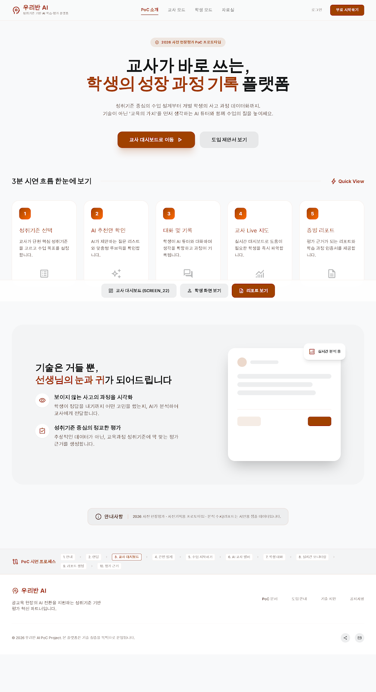
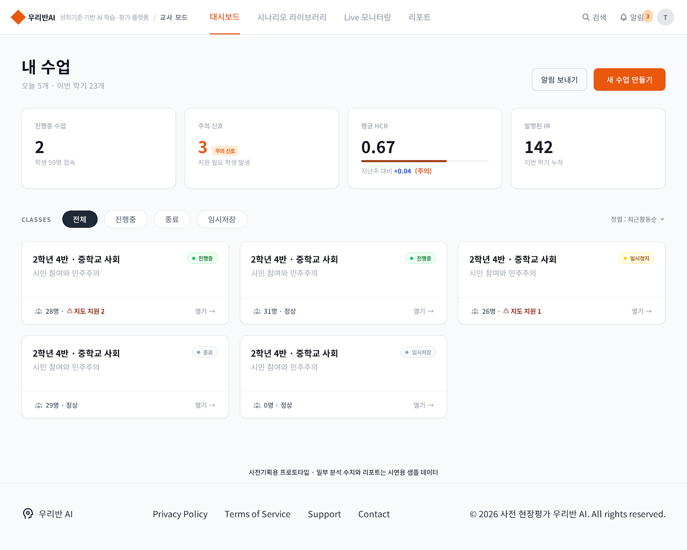
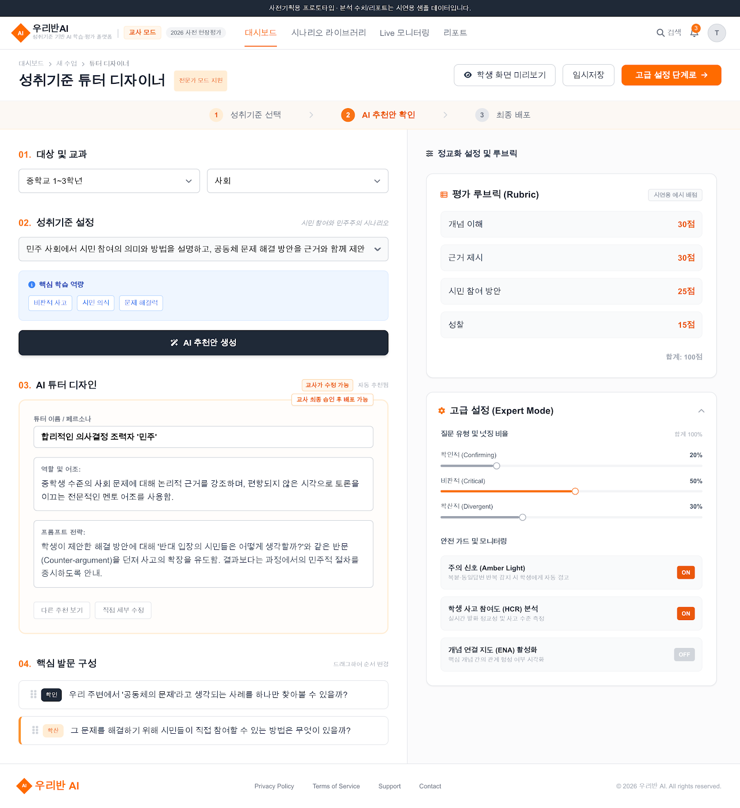
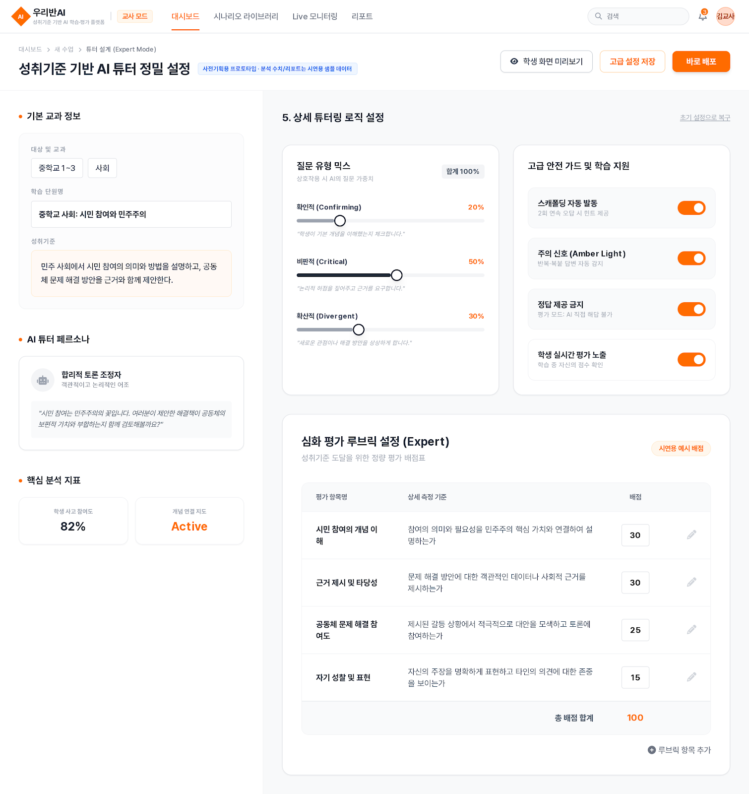
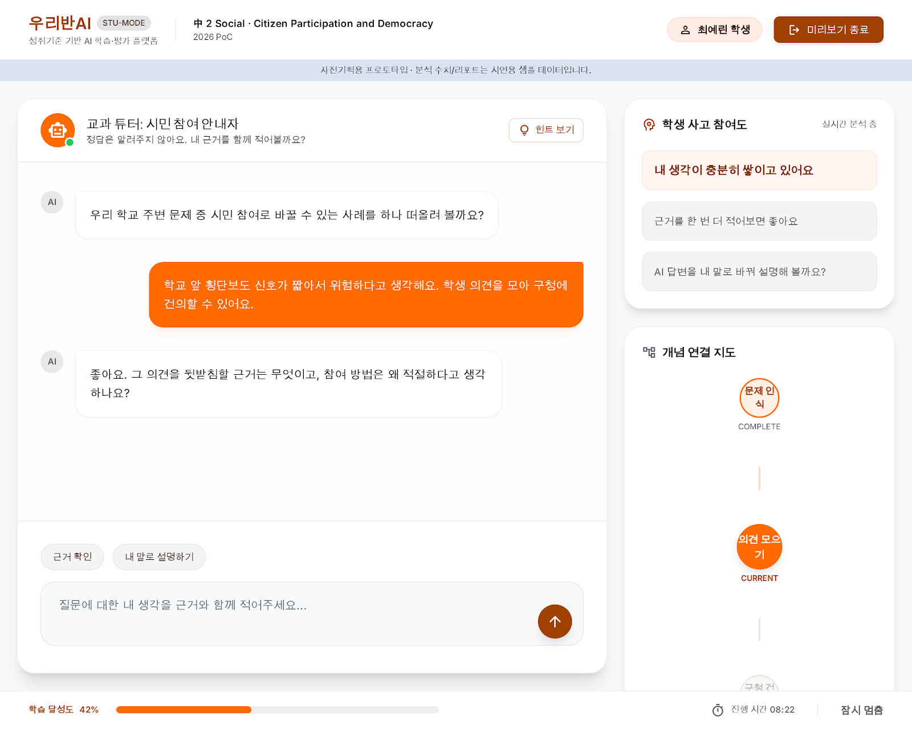
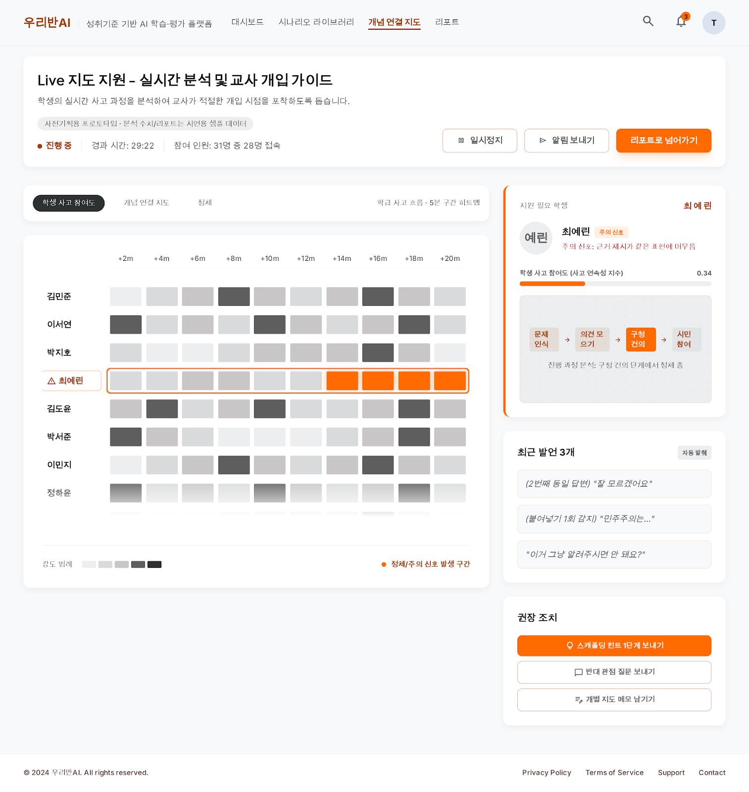
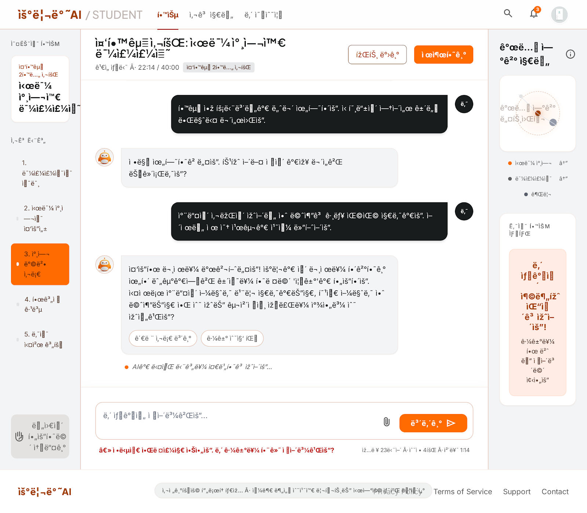
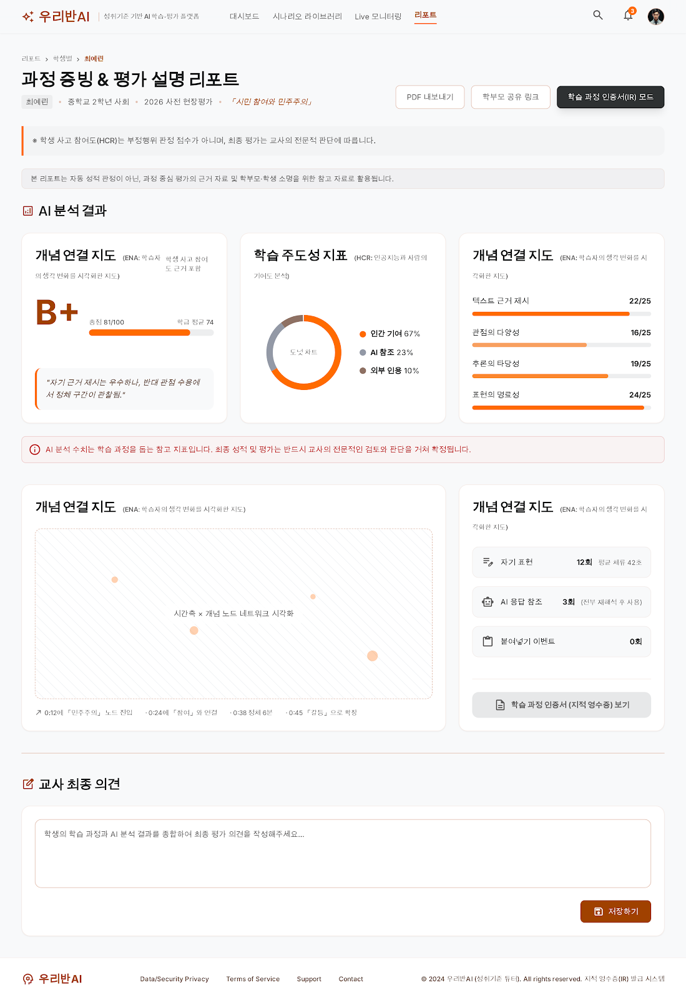
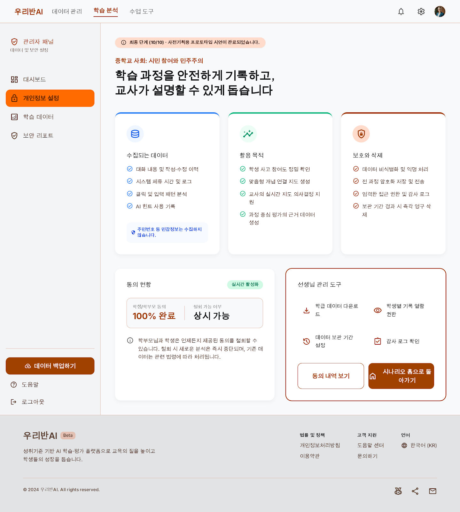

현장 교사의 주도성과 교육의 본질적인 가치를 지키는 교육학적 설계.
성취기준에 정확히 매칭된 AI 튜터 설정부터 실시간 데이터 분석, 과정 증빙 리포트까지 유기적으로 이어지는 3분 가상 시연 흐름을 경험하세요.
화면정의서에 근거해 구성된 교사용 및 학생용 PoC 여정입니다. 원하는 단계를 선택해 직접 뛰어넘을 수도 있습니다.
화면정의서(pptx)에 수록된 각 화면별 목적과 시뮬레이션 코드 모형입니다.

SLIDE 4교사와 학생의 시작점 역할을 합니다. PoC의 개괄적인 흐름과 주요 기능적 지표들을 직관적으로 설명하는 허브 페이지입니다.

SLIDE 5교사의 전체 학급 수업 통계를 종합합니다. 학생 사고 참여 지수(Average HCR), 경고 주의 신호(Amber Light) 학생 비율, 누적 인증서(IR)를 관제합니다.

SLIDE 6선택한 교육과정 성취기준에 맞춰 AI 튜터의 성격, 프롬프트 지도 가이드, 시나리오별 넛지 발문을 교사가 능동적으로 제안 및 튜닝하는 공간입니다.

SLIDE 6 (ADV)AI 튜터의 비판적/확산적 넛지 비율을 슬라이더로 조절하고, 부정행위 방지 가드 레일 작동 상태 및 평가 배점 루브릭을 수치적으로 디테일하게 셋업합니다.

SLIDE 7수업 배포 직전 가상의 학생 신분으로 AI의 동작 반응을 시연해보는 에뮬레이터입니다. 우측에서 가상의 학생용 사고 상태 맵이 연동됩니다.

SLIDE 8수업 현장에서 실시간으로 학급 전체의 사고 누적 히트맵을 봅니다. 복사 붙여넣기나 생각 멈춤 현상이 나타난 학생을 포착하여 즉각적인 피드백을 전달합니다.

SLIDE 10최대한 심플하게 구성된 학생용 인터페이스입니다. 좌측의 단계별 사고 진도와 우측의 ENA 개념망을 참고하며 AI의 넛지 발문에 따라 자기 근거를 보강합니다.

SLIDE 9교사의 소명 및 증빙을 돕는 심화 평가 보고서입니다. 실시간 ENA 생각 관계 궤적, HCR 인적 기여도 지수 등이 체계적으로 기록되어 PDF 인쇄를 제공합니다.

SLIDE 4 (SEC)익명화 데이터 백업, 학부모 동의 서명 상태 체크, 상시 감사 로그를 모니터링하여 공교육에 바로 쓸 수 있는 완전무결한 신뢰 안정망 구축 상태를 나타냅니다.